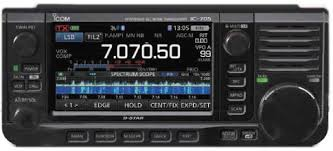
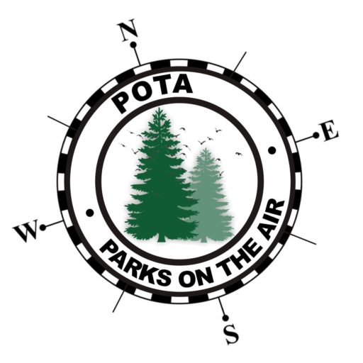

Virtual Ham Expo 2021

As you may remember I attended last year’s QSO Today Virtual Ham Expo. In case you missed it, here’s my 2020 Ham Expo review!
Anyway, seems like everything is virtual these days. It’s becoming difficult to remember when I attended the last Hamfest!
Ham Expo will give you a chance to check out vendors and their products from the comfort of your Ham Shack. Read all about it on the Expo Home Page. Be sure to check out the speaker and exhibitor lists. Tickets are $10.
ICOM IC-705
A new hybrid radio. Base station radio performance and functions are packaged in a compact and lightweight portable size. Whether you are taking your hobby to a SOTA, POTA, or some other "On the Air" location, the IC-705 will be your "GO TO" rig!
Parks On The Air
Welcome to the Parks on the Air ® (POTA) site for international portable amateur radio operations that promote emergency awareness and communications from national/federal and state/provincial level parks.